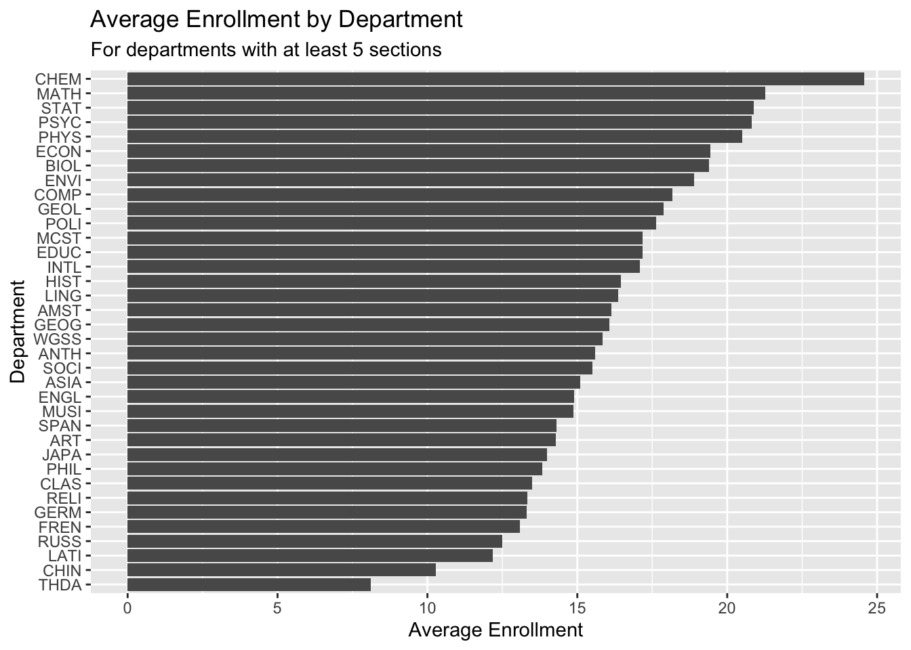
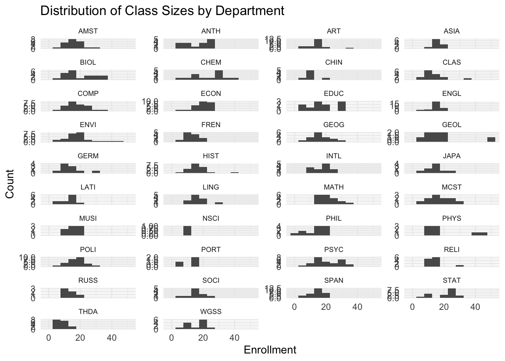
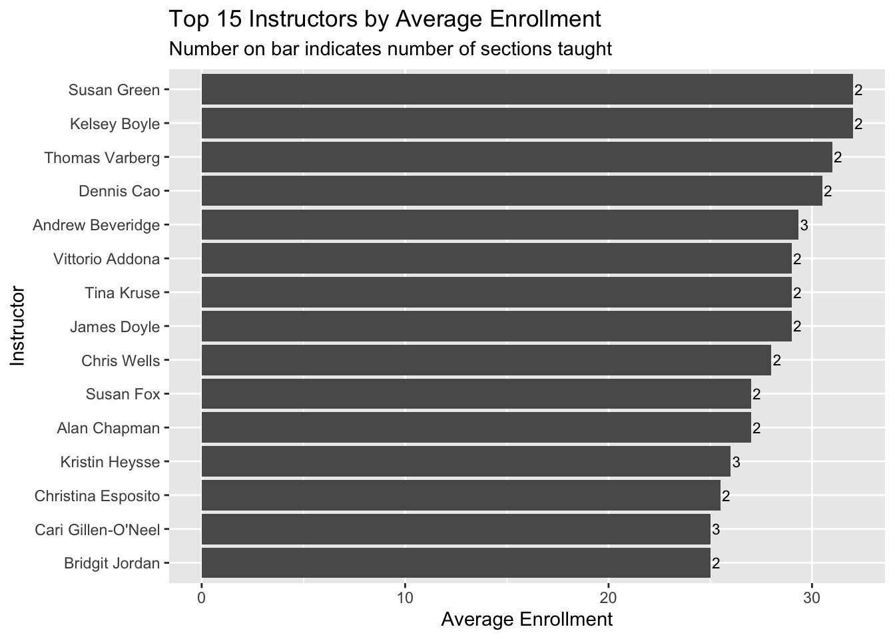
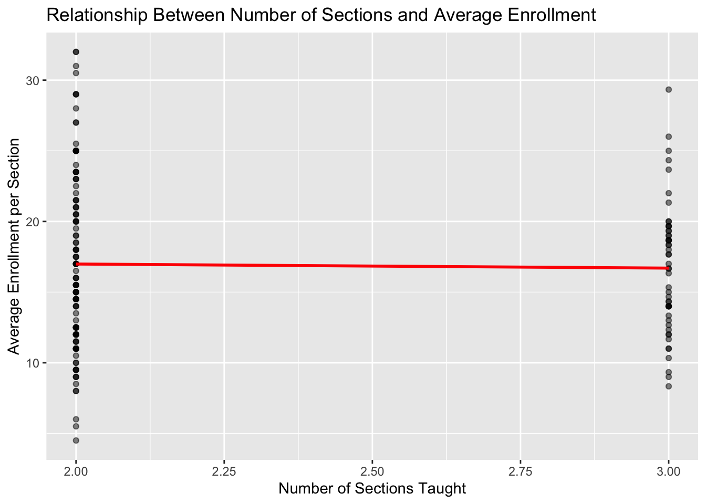
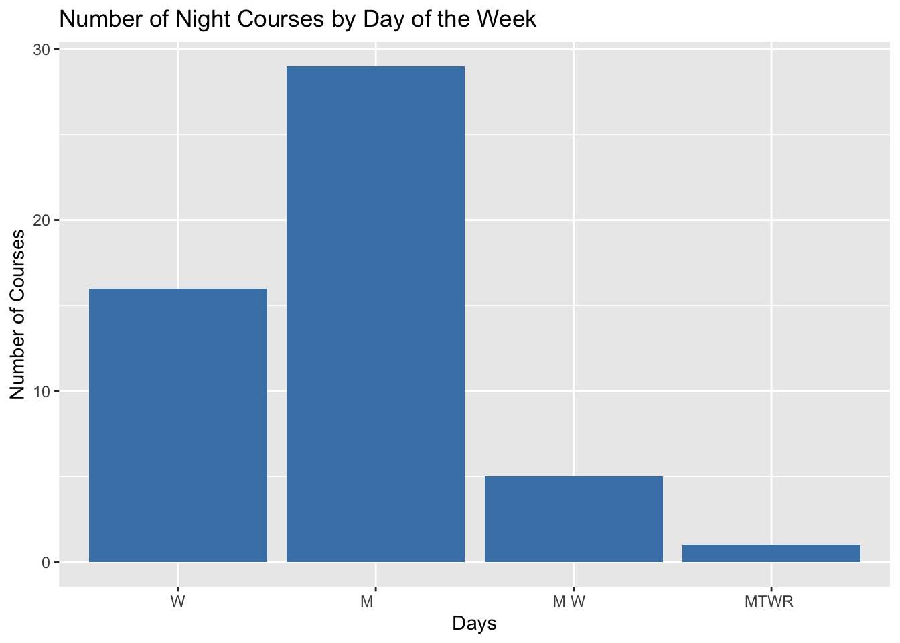

We’re in the last day of our “data preparation” unit:
20.4 13.2 Strings
In the previous class, we started discussing some considerations in working with special types of “categorical” variables: characters and factors which are:
Converting characters to factors (and factors to meaningful factors)–last time When categorical information is stored as a character variable, the categories of interest might not be labeled or ordered in a meaningful way. We can fix that!
Strings–today! When working with character strings, we might want to detect, replace, or extract certain patterns. For example, recall our data on courses:
Focusing on just the sem character variable, we might want to…
change FA to fall_ and SP to spring_
keep only courses taught in fall
split the variable into 2 new variables: semester (FA or SP) and year
20.4.1 Essential Functions
The stringr package within tidyverse contains lots of functions to help process strings. We’ll focus on the most common. Letting x be a string variable…
function
arguments
returns
str_replace()
x, pattern, replacement
a modified string
str_replace_all()
x, pattern, replacement
a modified string
str_to_lower()
x
a modified string
str_sub()
x, start, end
a modified string
str_length()
x
a number
str_detect()
x, pattern
TRUE/FALSE
20.4.2 Example 1
Consider the following data with string variables:
library(tidyverse)
── Attaching core tidyverse packages ──────────────────────── tidyverse 2.0.0 ──
✔ dplyr 1.1.4 ✔ readr 2.1.5
✔ forcats 1.0.0 ✔ stringr 1.5.1
✔ ggplot2 3.5.2 ✔ tibble 3.2.1
✔ lubridate 1.9.4 ✔ tidyr 1.3.1
✔ purrr 1.0.4
── Conflicts ────────────────────────────────────────── tidyverse_conflicts() ──
✖ dplyr::filter() masks stats::filter()
✖ dplyr::lag() masks stats::lag()
ℹ Use the conflicted package (<http://conflicted.r-lib.org/>) to force all conflicts to become errors
sem area enroll instructor
1 SP2023 History 30 - people Ernesto Capello
2 FA2023 Math 20 - people Lori Ziegelmeier
3 SP2024 Anthro 25 - people Arjun Guneratne
Using only your intuition, use our str_ functions to complete the following. NOTE: You might be able to use other wrangling verbs in some cases, but focus on the new functions here.
# Define a new variable "num" that adds up the number of characters in the area labelclasses |>mutate(num =str_length(area))
sem area enroll instructor num
1 SP2023 History 30 - people Ernesto Capello 7
2 FA2023 Math 20 - people Lori Ziegelmeier 4
3 SP2024 Anthro 25 - people Arjun Guneratne 6
# Change the areas to "history", "math", "anthro" instead of "History", "Math", "Anthro"classes |>mutate(area =str_to_lower(area))
sem area enroll instructor
1 SP2023 history 30 - people Ernesto Capello
2 FA2023 math 20 - people Lori Ziegelmeier
3 SP2024 anthro 25 - people Arjun Guneratne
# Create a variable that id's which courses were taught in springclasses |>mutate(spring =str_detect(sem, "SP"))
sem area enroll instructor spring
1 SP2023 History 30 - people Ernesto Capello TRUE
2 FA2023 Math 20 - people Lori Ziegelmeier FALSE
3 SP2024 Anthro 25 - people Arjun Guneratne TRUE
# Change the semester labels to "fall2023", "spring2024", "spring2023"classes |>mutate(sem =str_replace(sem, "SP", "spring")) |>mutate(sem =str_replace(sem, "FA", "fall"))
sem area enroll instructor
1 spring2023 History 30 - people Ernesto Capello
2 fall2023 Math 20 - people Lori Ziegelmeier
3 spring2024 Anthro 25 - people Arjun Guneratne
# In the enroll variable, change all e's to 3's (just because?)classes |>mutate(enroll =str_replace_all(enroll, "e", "3"))
sem area enroll instructor
1 SP2023 History 30 - p3opl3 Ernesto Capello
2 FA2023 Math 20 - p3opl3 Lori Ziegelmeier
3 SP2024 Anthro 25 - p3opl3 Arjun Guneratne
# Use sem to create 2 new variables, one with only the semester (SP/FA) and 1 with the yearclasses |>mutate(semester =str_sub(sem, 1, 2),year =str_sub(sem, 3, 6))
sem area enroll instructor semester year
1 SP2023 History 30 - people Ernesto Capello SP 2023
2 FA2023 Math 20 - people Lori Ziegelmeier FA 2023
3 SP2024 Anthro 25 - people Arjun Guneratne SP 2024
20.4.3 Summary
Here’s what we learned about each function:
str_replace(x, pattern, replacement) finds the first part of x that matches the pattern and replaces it with replacement
str_replace_all(x, pattern, replacement) finds all instances in x that matches the pattern and replaces it with replacement
str_to_lower(x) converts all upper case letters in x to lower case
str_sub(x, start, end) only keeps a subset of characters in x, from start (a number indexing the first letter to keep) to end (a number indexing the last letter to keep)
str_length(x) records the number of characters in x
str_detect(x, pattern) is TRUE if x contains the given pattern and FALSE otherwise
20.4.4 Example 2
Suppose we only want the spring courses:
# How can we do this after mutating?classes |>mutate(spring =str_detect(sem, "SP"))
sem area enroll instructor spring
1 SP2023 History 30 - people Ernesto Capello TRUE
2 FA2023 Math 20 - people Lori Ziegelmeier FALSE
3 SP2024 Anthro 25 - people Arjun Guneratne TRUE
# We don't have to mutate first!classes |>filter(str_detect(sem, "SP"))
sem area enroll instructor
1 SP2023 History 30 - people Ernesto Capello
2 SP2024 Anthro 25 - people Arjun Guneratne
# Yet another wayclasses |>filter(!str_detect(sem, "FA"))
sem area enroll instructor
1 SP2023 History 30 - people Ernesto Capello
2 SP2024 Anthro 25 - people Arjun Guneratne
20.4.5 Example 3
Suppose we wanted to get separate columns for the first and last names of each course instructor in classes. Try doing this using str_sub(). But don’t try too long! Explain what trouble you ran into.
The trouble with using str_sub() is that the positions of the first and last names are not consistent across all rows. Names have different lengths, and some might have middle names or multiple last names. str_sub() is best for cases where you know the exact position of characters you want to extract.
20.4.6 Example 4
In general, when we want to split a column into 2+ new columns, we can often use separate():
sem area enroll first last
1 SP2023 History 30 - people Ernesto Capello
2 FA2023 Math 20 - people Lori Ziegelmeier
3 SP2024 Anthro 25 - people Arjun Guneratne
# Sometimes the function can "intuit" how we want to separate the variableclasses |>separate(instructor, c("first", "last"))
sem area enroll first last
1 SP2023 History 30 - people Ernesto Capello
2 FA2023 Math 20 - people Lori Ziegelmeier
3 SP2024 Anthro 25 - people Arjun Guneratne
Separate enroll into 2 separate columns: students and people. (These columns don’t make sense this is just practice).
sem area students people instructor
1 SP2023 History 30 people Ernesto Capello
2 FA2023 Math 20 people Lori Ziegelmeier
3 SP2024 Anthro 25 people Arjun Guneratne
We separated sem into semester and year above using str_sub(). Why would this be hard using separate()?
It would be hard using separate() because there’s no separator character between the semester code (SP/FA) and the year - they’re directly adjacent. The separate() function needs a character or pattern to split on.
When we want to split a column into 2+ new columns (or do other types of string processing), but there’s no consistent pattern by which to do this, we can use regular expressions (an optional topic):
# (?<=[SP|FA]): any character *before* the split point is a "SP" or "FA"# (?=2): the first character *after* the split point is a 2classes |>separate(sem, c("semester", "year"),"(?<=[SP|FA])(?=2)")
semester year area enroll instructor
1 SP 2023 History 30 - people Ernesto Capello
2 FA 2023 Math 20 - people Lori Ziegelmeier
3 SP 2024 Anthro 25 - people Arjun Guneratne
# More general:# (?<=[a-zA-Z]): any character *before* the split point is a lower or upper case letter# (?=[0-9]): the first character *after* the split point is numberclasses |>separate(sem, c("semester", "year"),"(?<=[A-Z])(?=[0-9])")
semester year area enroll instructor
1 SP 2023 History 30 - people Ernesto Capello
2 FA 2023 Math 20 - people Lori Ziegelmeier
3 SP 2024 Anthro 25 - people Arjun Guneratne
20.5 13.3 Exercises
The exercises revisit our courses data from the Mac class schedule:
courses <-read.csv("https://mac-stat.github.io/data/registrar.csv")# Check it outhead(courses)
number crn name days
1 AMST 112-01 10318 Introduction to African American Literature M W F
2 AMST 194-01 10073 Introduction to Asian American Studies M W F
3 AMST 194-F1 10072 What’s After White Empire - And Is It Already Here? T R
4 AMST 203-01 10646 Politics and Inequality: The American Welfare State M W F
5 AMST 205-01 10842 Trans Theories and Politics T R
6 AMST 209-01 10474 Civil Rights in the United States W
time room instructor avail_max
1 9:40 - 10:40 am MAIN 009 Daylanne English 3 / 20
2 1:10 - 2:10 pm MUSIC 219 Jake Nagasawa -4 / 16
3 3:00 - 4:30 pm HUM 214 Karin Aguilar-San Juan 0 / 14
4 9:40 - 10:40 am CARN 305 Lesley Lavery 3 / 25
5 3:00 - 4:30 pm MAIN 009 Myrl Beam -2 / 20
6 7:00 - 10:00 pm MAIN 010 Walter Greason -1 / 15
20.5.1 Exercise 1: Time slots
Use our more familiar wrangling tools to warm up.
# Construct a table that indicates the number of classes offered in each day/time slot# Print only the 6 most popular time slotscourses |>count(days, time) |>arrange(desc(n)) |>head(6)
days time n
1 M W F 10:50 - 11:50 am 76
2 T R 9:40 - 11:10 am 71
3 M W F 9:40 - 10:40 am 68
4 M W F 1:10 - 2:10 pm 66
5 T R 3:00 - 4:30 pm 62
6 T R 1:20 - 2:50 pm 59
20.5.2 Exercise 2: Prep the data
So that we can analyze it later, we want to wrangle the courses data:
Let’s get some enrollment info: - Split avail_max into 2 separate variables: avail and max. - Use avail and max to define a new variable called enroll. HINT: You’ll need as.numeric() - Split the course number into 3 separate variables: dept, number, and section. HINT: You can use separate() to split a variable into 3, not just 2 new variables. - Store this as courses_clean so that you can use it later.
dept number section crn name
1 AMST 112 01 10318 Introduction to African American Literature
2 AMST 194 01 10073 Introduction to Asian American Studies
3 AMST 194 F1 10072 What’s After White Empire - And Is It Already Here?
4 AMST 203 01 10646 Politics and Inequality: The American Welfare State
5 AMST 205 01 10842 Trans Theories and Politics
6 AMST 209 01 10474 Civil Rights in the United States
days time room instructor avail max enroll
1 M W F 9:40 - 10:40 am MAIN 009 Daylanne English 3 20 17
2 M W F 1:10 - 2:10 pm MUSIC 219 Jake Nagasawa -4 16 20
3 T R 3:00 - 4:30 pm HUM 214 Karin Aguilar-San Juan 0 14 14
4 M W F 9:40 - 10:40 am CARN 305 Lesley Lavery 3 25 22
5 T R 3:00 - 4:30 pm MAIN 009 Myrl Beam -2 20 22
6 W 7:00 - 10:00 pm MAIN 010 Walter Greason -1 15 16
20.5.3 Exercise 3: Courses by department
Using courses_clean…
# Identify the 6 departments that offered the most sectionscourses_clean |>count(dept) |>arrange(desc(n)) |>head(6)
# Identify the 6 departments with the longest average course titlescourses_clean |>mutate(title_length =str_length(name)) |>group_by(dept) |>summarize(avg_length =mean(title_length)) |>arrange(desc(avg_length)) |>head(6)
dept number section crn name days time
1 STAT 253 01 10806 Statistical Machine Learning T R 9:40 - 11:10 am
2 STAT 253 02 10807 Statistical Machine Learning T R 1:20 - 2:50 pm
3 STAT 253 03 10808 Statistical Machine Learning T R 3:00 - 4:30 pm
room instructor avail max enroll
1 THEATR 206 Alicia Johnson -3 20 23
2 THEATR 206 Alicia Johnson -3 20 23
3 THEATR 206 Alicia Johnson 2 20 18
20.5.4.2 Part b
Create a new dataset from courses_clean, named stat, that only includes STAT sections. In this dataset:
In the course names: - Remove “Introduction to” from any name. - Shorten “Statistical” to “Stat” where relevant. - Define a variable that records the start_time for the course.
Keep only the number, name, start_time, enroll columns.
number name start_time enroll
1 112 Data Science 3:00 27
2 112 Data Science 9:40 21
3 112 Data Science 1:20 25
4 125 Epidemiology 12:00 26
5 155 Stat Modeling 1:10 32
6 155 Stat Modeling 9:40 24
7 155 Stat Modeling 10:50 26
8 155 Stat Modeling 3:30 25
9 155 Stat Modeling 1:20 30
10 155 Stat Modeling 3:00 27
11 212 Intermediate Data Science 9:40 11
12 212 Intermediate Data Science 1:20 11
13 253 Stat Machine Learning 9:40 23
14 253 Stat Machine Learning 1:20 23
15 253 Stat Machine Learning 3:00 18
16 354 Probability 3:00 22
17 452 Correlated Data 9:40 7
18 452 Correlated Data 1:20 8
19 456 Projects in Data Science 9:40 11
20.5.5 Exercise 5: More cleaning
In the next exercises, we’ll dig into enrollments. Let’s get the data ready for that analysis here. Make the following changes to the courses_clean data. Because they have different enrollment structures, and we don’t want to compare apples and oranges, remove the following:
all sections in PE and INTD (interdisciplinary studies courses)
all music ensembles and dance practicums, i.e. all MUSI and THDA classes with numbers less than 100.
all lab sections. Be careful which variable you use here. For example, you don’t want to search by “Lab” and accidentally eliminate courses with words such as “Labor”.
Save the results as enrollments (don’t overwrite courses_clean).
dept number section crn name
1 AMST 112 01 10318 Introduction to African American Literature
2 AMST 194 01 10073 Introduction to Asian American Studies
3 AMST 194 F1 10072 What’s After White Empire - And Is It Already Here?
4 AMST 203 01 10646 Politics and Inequality: The American Welfare State
5 AMST 205 01 10842 Trans Theories and Politics
6 AMST 209 01 10474 Civil Rights in the United States
days time room instructor avail max enroll
1 M W F 9:40 - 10:40 am MAIN 009 Daylanne English 3 20 17
2 M W F 1:10 - 2:10 pm MUSIC 219 Jake Nagasawa -4 16 20
3 T R 3:00 - 4:30 pm HUM 214 Karin Aguilar-San Juan 0 14 14
4 M W F 9:40 - 10:40 am CARN 305 Lesley Lavery 3 25 22
5 T R 3:00 - 4:30 pm MAIN 009 Myrl Beam -2 20 22
6 W 7:00 - 10:00 pm MAIN 010 Walter Greason -1 15 16
20.5.6 Exercise 6: Enrollment & departments
Explore enrollments by department. You decide what research questions to focus on. Use both visual and numerical summaries.
# Let's look at average enrollment by departmentdept_enrollments <- enrollments |>group_by(dept) |>summarize(avg_enrollment =mean(enroll, na.rm =TRUE),total_enrollment =sum(enroll, na.rm =TRUE),num_sections =n()) |>filter(num_sections >=5) |># Only include departments with at least 5 sectionsarrange(desc(avg_enrollment))# Display the top departments by average enrollmenthead(dept_enrollments, 10)
# Visualize average enrollments by departmentggplot(dept_enrollments, aes(x =reorder(dept, avg_enrollment), y = avg_enrollment)) +geom_col() +coord_flip() +labs(title ="Average Enrollment by Department",subtitle ="For departments with at least 5 sections",x ="Department",y ="Average Enrollment")

# Let's also look at the distribution of class sizes across departmentsggplot(enrollments, aes(x = enroll)) +geom_histogram(binwidth =5) +facet_wrap(~dept, scales ="free_y", ncol =4) +labs(title ="Distribution of Class Sizes by Department",x ="Enrollment",y ="Count") +theme_minimal() +theme(strip.text =element_text(size =7))

20.5.7 Exercise 7: Enrollment & faculty
Let’s now explore enrollments by instructor. In doing so, we have to be cautious of cross-listed courses that are listed under multiple different departments.
# Example of cross-listed coursesenrollments |>filter(dept %in%c("STAT", "COMP"), number =="112", section =="01")
dept number section crn name days time
1 COMP 112 01 10248 Introduction to Data Science T R 3:00 - 4:30 pm
2 STAT 112 01 10249 Introduction to Data Science T R 3:00 - 4:30 pm
room instructor avail max enroll
1 OLRI 254 Brianna Heggeseth 1 28 27
2 OLRI 254 Brianna Heggeseth 1 28 27
Notice that these are the exact same section! In order to not double count an instructor’s enrollments, we can keep only the courses that have distinct() combinations of days, time, instructor values.
enrollments_2 <- enrollments |>distinct(days, time, instructor, .keep_all =TRUE)# NOTE: By default this keeps the first department alphabetically# That's fine because we won't use this to analyze department enrollments!enrollments_2 |>filter(instructor =="Brianna Heggeseth", name =="Introduction to Data Science")
dept number section crn name days time
1 COMP 112 01 10248 Introduction to Data Science T R 3:00 - 4:30 pm
room instructor avail max enroll
1 OLRI 254 Brianna Heggeseth 1 28 27
Now, explore enrollments by instructor. You decide what research questions to focus on. Use both visual and numerical summaries.
# Let's identify instructors with the highest average enrollmentsinstructor_enrollments <- enrollments_2 |>group_by(instructor) |>summarize(avg_enrollment =mean(enroll, na.rm =TRUE),total_enrollment =sum(enroll, na.rm =TRUE),num_sections =n()) |>filter(num_sections >=2) |># Only include instructors teaching at least 2 sectionsarrange(desc(avg_enrollment))# Display the top instructors by average enrollmenthead(instructor_enrollments, 10)
# A tibble: 10 × 4
instructor avg_enrollment total_enrollment num_sections
<chr> <dbl> <dbl> <int>
1 Kelsey Boyle 32 64 2
2 Susan Green 32 64 2
3 Thomas Varberg 31 62 2
4 Dennis Cao 30.5 61 2
5 Andrew Beveridge 29.3 88 3
6 James Doyle 29 58 2
7 Tina Kruse 29 58 2
8 Vittorio Addona 29 58 2
9 Chris Wells 28 56 2
10 Alan Chapman 27 54 2
# Visualize the instructors with the highest average enrollmentsinstructor_enrollments |>arrange(desc(avg_enrollment)) |>head(15) |>ggplot(aes(x =reorder(instructor, avg_enrollment), y = avg_enrollment)) +geom_col() +geom_text(aes(label = num_sections), hjust =-0.2, size =3) +coord_flip() +labs(title ="Top 15 Instructors by Average Enrollment",subtitle ="Number on bar indicates number of sections taught",x ="Instructor",y ="Average Enrollment")

# Let's also look at the relationship between number of sections taught and average enrollmentggplot(instructor_enrollments, aes(x = num_sections, y = avg_enrollment)) +geom_point(alpha =0.5) +geom_smooth(method ="lm", se =FALSE, color ="red") +labs(title ="Relationship Between Number of Sections and Average Enrollment",x ="Number of Sections Taught",y ="Average Enrollment per Section")
`geom_smooth()` using formula = 'y ~ x'

20.5.8 Optional extra practice
# Make a bar plot showing the number of night courses by day of the week# Use courses_cleancourses_clean |>filter(str_detect(time, "7:00")) |>ggplot(aes(x = days)) +geom_bar(fill ="steelblue") +labs(title ="Number of Night Courses by Day of the Week",x ="Days",y ="Number of Courses")

Source Code
---title: "Working with Strings"format: html---## Learning Goals- Learn some fundamentals of working with strings of text data.- Learn functions to search and replace, detect patterns, locate patterns, extract patterns, and separate text with the stringr package.## Additional ResourcesFor more information about the topics covered in this chapter, refer to the resources below:- [Working with strings (YouTube)](https://www.youtube.com/watch?v=f5i1m22_wAE) by Lisa Lendway- [strings cheat sheet (pdf)](https://posit.co/wp-content/uploads/2022/10/strings-1.pdf)- [Strings (html)](https://r4ds.had.co.nz/strings.html) by Wickham, Çetinkaya-Rundel, & Grolemund- [Regular expressions (html)](https://mdsr-book.github.io/mdsr2e/ch-regex.html) by Baumer, Kaplan, and Horton- [RegExplain RStudio addin tool (html)](https://www.garrickadenbuie.com/project/regexplain/)- [regexr exploration tool (html)](https://regexr.com/)## 13.1 ReviewWHERE ARE WE?We're in the last day of our "data preparation" unit:## 13.2 StringsIn the previous class, we started discussing some considerations in working with special types of "categorical" variables: characters and factors which are:1. Converting characters to factors (and factors to meaningful factors)–last time When categorical information is stored as a character variable, the categories of interest might not be labeled or ordered in a meaningful way. We can fix that!2. Strings–today! When working with character strings, we might want to detect, replace, or extract certain patterns. For example, recall our data on courses:``` sessionID dept level sem enroll iid 1 session1784 M 100 FA1991 22 inst265 2 session1785 k 100 FA1991 52 inst458 3 session1791 J 100 FA1993 22 inst223 4 session1792 J 300 FA1993 20 inst235 5 session1794 J 200 FA1993 22 inst234 6 session1795 J 200 SP1994 26 inst230 ``` Focusing on just the sem character variable, we might want to… - change FA to fall\_ and SP to spring\_ - keep only courses taught in fall - split the variable into 2 new variables: semester (FA or SP) and year### Essential FunctionsThe stringr package within tidyverse contains lots of functions to help process strings. We'll focus on the most common. Letting x be a string variable…| function | arguments | returns ||-------------------|-------------------------|-------------------|| str_replace() | x, pattern, replacement | a modified string || str_replace_all() | x, pattern, replacement | a modified string || str_to_lower() | x | a modified string || str_sub() | x, start, end | a modified string || str_length() | x | a number || str_detect() | x, pattern | TRUE/FALSE |### Example 1Consider the following data with string variables:```{r}library(tidyverse)classes <-data.frame(sem =c("SP2023", "FA2023", "SP2024"),area =c("History", "Math", "Anthro"),enroll =c("30 - people", "20 - people", "25 - people"),instructor =c("Ernesto Capello", "Lori Ziegelmeier", "Arjun Guneratne"))classes```Using only your intuition, use our str\_ functions to complete the following. NOTE: You might be able to use other wrangling verbs in some cases, but focus on the new functions here.```{r}# Define a new variable "num" that adds up the number of characters in the area labelclasses |>mutate(num =str_length(area))``````{r}# Change the areas to "history", "math", "anthro" instead of "History", "Math", "Anthro"classes |>mutate(area =str_to_lower(area))``````{r}# Create a variable that id's which courses were taught in springclasses |>mutate(spring =str_detect(sem, "SP"))``````{r}# Change the semester labels to "fall2023", "spring2024", "spring2023"classes |>mutate(sem =str_replace(sem, "SP", "spring")) |>mutate(sem =str_replace(sem, "FA", "fall"))``````{r}# In the enroll variable, change all e's to 3's (just because?)classes |>mutate(enroll =str_replace_all(enroll, "e", "3"))``````{r}# Use sem to create 2 new variables, one with only the semester (SP/FA) and 1 with the yearclasses |>mutate(semester =str_sub(sem, 1, 2),year =str_sub(sem, 3, 6))```### SummaryHere's what we learned about each function:- str_replace(x, pattern, replacement) finds the first part of x that matches the pattern and replaces it with replacement- str_replace_all(x, pattern, replacement) finds all instances in x that matches the pattern and replaces it with replacement- str_to_lower(x) converts all upper case letters in x to lower case- str_sub(x, start, end) only keeps a subset of characters in x, from start (a number indexing the first letter to keep) to end (a number indexing the last letter to keep)- str_length(x) records the number of characters in x- str_detect(x, pattern) is TRUE if x contains the given pattern and FALSE otherwise### Example 2Suppose we only want the spring courses:```{r}# How can we do this after mutating?classes |>mutate(spring =str_detect(sem, "SP"))``````{r}# We don't have to mutate first!classes |>filter(str_detect(sem, "SP"))``````{r}# Yet another wayclasses |>filter(!str_detect(sem, "FA"))```### Example 3Suppose we wanted to get separate columns for the first and last names of each course instructor in classes. Try doing this using str_sub(). But don't try too long! Explain what trouble you ran into.*The trouble with using str_sub() is that the positions of the first and last names are not consistent across all rows. Names have different lengths, and some might have middle names or multiple last names. str_sub() is best for cases where you know the exact position of characters you want to extract.*### Example 4In general, when we want to split a column into 2+ new columns, we can often use separate():```{r}classes |>separate(instructor, c("first", "last"), sep =" ")``````{r}# Sometimes the function can "intuit" how we want to separate the variableclasses |>separate(instructor, c("first", "last"))```Separate enroll into 2 separate columns: students and people. (These columns don't make sense this is just practice).```{r}classes |>separate(enroll, c("students", "people"), sep =" - ")```We separated sem into semester and year above using str_sub(). Why would this be hard using separate()?*It would be hard using separate() because there's no separator character between the semester code (SP/FA) and the year - they're directly adjacent. The separate() function needs a character or pattern to split on.*When we want to split a column into 2+ new columns (or do other types of string processing), but there's no consistent pattern by which to do this, we can use regular expressions (an optional topic):```{r}# (?<=[SP|FA]): any character *before* the split point is a "SP" or "FA"# (?=2): the first character *after* the split point is a 2classes |>separate(sem, c("semester", "year"),"(?<=[SP|FA])(?=2)")``````{r}# More general:# (?<=[a-zA-Z]): any character *before* the split point is a lower or upper case letter# (?=[0-9]): the first character *after* the split point is numberclasses |>separate(sem, c("semester", "year"),"(?<=[A-Z])(?=[0-9])")```## 13.3 ExercisesThe exercises revisit our courses data from the Mac class schedule:```{r}courses <-read.csv("https://mac-stat.github.io/data/registrar.csv")# Check it outhead(courses)```### Exercise 1: Time slotsUse our more familiar wrangling tools to warm up.```{r}# Construct a table that indicates the number of classes offered in each day/time slot# Print only the 6 most popular time slotscourses |>count(days, time) |>arrange(desc(n)) |>head(6)```### Exercise 2: Prep the dataSo that we can analyze it later, we want to wrangle the courses data:Let's get some enrollment info: - Split avail_max into 2 separate variables: avail and max. - Use avail and max to define a new variable called enroll. HINT: You'll need as.numeric() - Split the course number into 3 separate variables: dept, number, and section. HINT: You can use separate() to split a variable into 3, not just 2 new variables. - Store this as courses_clean so that you can use it later.```{r}courses_clean <- courses |>separate(avail_max, c("avail", "max"), sep =" / ") |>mutate(avail =as.numeric(avail),max =as.numeric(max),enroll = max - avail) |>separate(number, c("dept", "number", "section"))head(courses_clean)```### Exercise 3: Courses by departmentUsing courses_clean...```{r}# Identify the 6 departments that offered the most sectionscourses_clean |>count(dept) |>arrange(desc(n)) |>head(6)``````{r}# Identify the 6 departments with the longest average course titlescourses_clean |>mutate(title_length =str_length(name)) |>group_by(dept) |>summarize(avg_length =mean(title_length)) |>arrange(desc(avg_length)) |>head(6)```### Exercise 4: STAT courses#### Part aGet a subset of courses_clean that only includes courses taught by Alicia Johnson.```{r}courses_clean |>filter(str_detect(instructor, "Alicia Johnson"))```#### Part bCreate a new dataset from courses_clean, named stat, that only includes STAT sections. In this dataset:In the course names: - Remove "Introduction to" from any name. - Shorten "Statistical" to "Stat" where relevant. - Define a variable that records the start_time for the course.Keep only the number, name, start_time, enroll columns.```{r}stat <- courses_clean |>filter(dept =="STAT") |>mutate(name =str_replace(name, "Introduction to ", ""),name =str_replace(name, "Statistical", "Stat"),start_time =str_sub(time, 1, 5)) |>select(number, name, start_time, enroll)stat```### Exercise 5: More cleaningIn the next exercises, we'll dig into enrollments. Let's get the data ready for that analysis here. Make the following changes to the courses_clean data. Because they have different enrollment structures, and we don't want to compare apples and oranges, remove the following:- all sections in PE and INTD (interdisciplinary studies courses)- all music ensembles and dance practicums, i.e. all MUSI and THDA classes with numbers less than 100.- all lab sections. Be careful which variable you use here. For example, you don't want to search by "Lab" and accidentally eliminate courses with words such as "Labor".Save the results as enrollments (don't overwrite courses_clean).```{r}enrollments <- courses_clean |>filter(dept !="PE", dept !="INTD") |>filter(!(dept =="MUSI"&as.numeric(number) <100)) |>filter(!(dept =="THDA"&as.numeric(number) <100)) |>filter(!str_detect(section, "L"))head(enrollments)```### Exercise 6: Enrollment & departmentsExplore enrollments by department. You decide what research questions to focus on. Use both visual and numerical summaries.```{r}# Let's look at average enrollment by departmentdept_enrollments <- enrollments |>group_by(dept) |>summarize(avg_enrollment =mean(enroll, na.rm =TRUE),total_enrollment =sum(enroll, na.rm =TRUE),num_sections =n()) |>filter(num_sections >=5) |># Only include departments with at least 5 sectionsarrange(desc(avg_enrollment))# Display the top departments by average enrollmenthead(dept_enrollments, 10)``````{r}# Visualize average enrollments by departmentggplot(dept_enrollments, aes(x =reorder(dept, avg_enrollment), y = avg_enrollment)) +geom_col() +coord_flip() +labs(title ="Average Enrollment by Department",subtitle ="For departments with at least 5 sections",x ="Department",y ="Average Enrollment")``````{r}# Let's also look at the distribution of class sizes across departmentsggplot(enrollments, aes(x = enroll)) +geom_histogram(binwidth =5) +facet_wrap(~dept, scales ="free_y", ncol =4) +labs(title ="Distribution of Class Sizes by Department",x ="Enrollment",y ="Count") +theme_minimal() +theme(strip.text =element_text(size =7))```### Exercise 7: Enrollment & facultyLet's now explore enrollments by instructor. In doing so, we have to be cautious of cross-listed courses that are listed under multiple different departments.```{r}# Example of cross-listed coursesenrollments |>filter(dept %in%c("STAT", "COMP"), number =="112", section =="01")```Notice that these are the exact same section! In order to not double count an instructor's enrollments, we can keep only the courses that have distinct() combinations of days, time, instructor values.```{r}enrollments_2 <- enrollments |>distinct(days, time, instructor, .keep_all =TRUE)# NOTE: By default this keeps the first department alphabetically# That's fine because we won't use this to analyze department enrollments!enrollments_2 |>filter(instructor =="Brianna Heggeseth", name =="Introduction to Data Science")```Now, explore enrollments by instructor. You decide what research questions to focus on. Use both visual and numerical summaries.```{r}# Let's identify instructors with the highest average enrollmentsinstructor_enrollments <- enrollments_2 |>group_by(instructor) |>summarize(avg_enrollment =mean(enroll, na.rm =TRUE),total_enrollment =sum(enroll, na.rm =TRUE),num_sections =n()) |>filter(num_sections >=2) |># Only include instructors teaching at least 2 sectionsarrange(desc(avg_enrollment))# Display the top instructors by average enrollmenthead(instructor_enrollments, 10)``````{r}# Visualize the instructors with the highest average enrollmentsinstructor_enrollments |>arrange(desc(avg_enrollment)) |>head(15) |>ggplot(aes(x =reorder(instructor, avg_enrollment), y = avg_enrollment)) +geom_col() +geom_text(aes(label = num_sections), hjust =-0.2, size =3) +coord_flip() +labs(title ="Top 15 Instructors by Average Enrollment",subtitle ="Number on bar indicates number of sections taught",x ="Instructor",y ="Average Enrollment")``````{r}# Let's also look at the relationship between number of sections taught and average enrollmentggplot(instructor_enrollments, aes(x = num_sections, y = avg_enrollment)) +geom_point(alpha =0.5) +geom_smooth(method ="lm", se =FALSE, color ="red") +labs(title ="Relationship Between Number of Sections and Average Enrollment",x ="Number of Sections Taught",y ="Average Enrollment per Section")```### Optional extra practice```{r}# Make a bar plot showing the number of night courses by day of the week# Use courses_cleancourses_clean |>filter(str_detect(time, "7:00")) |>ggplot(aes(x = days)) +geom_bar(fill ="steelblue") +labs(title ="Number of Night Courses by Day of the Week",x ="Days",y ="Number of Courses")```